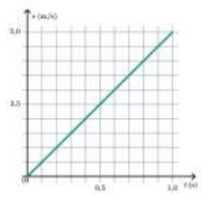

Kerjakan soal berikut dengan teliti dan jujur
1. Sebuah benda bergerak dengan percepatan tetap. Besaran yang selalu berubah adalah …
2. Satuan percepatan dalam SI adalah …
3. Perhatikan gambar dan grafik berikut!

Sebuah balok bermassa 4 kg didorong gaya horizontal 40 N pada lantai kasar. Berdasarkan grafik, koefisien gesek kinetik antara balok dan lantai adalah ...
4. Manakah pernyataan berikut yang benar mengenai Hukum I Newton? (Pilih semua yang benar)